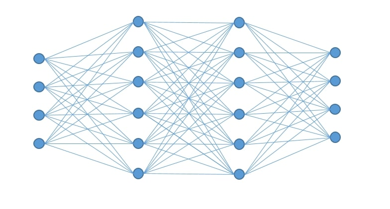

Machine Learning System
As part of my bachelor thesis, I used the tools of machine learning to solve a problem that could not be solved with traditional methods.
The task was to calculate the lead times for complex processes. This project allowed me to improve my skills in statistical mathematics and the Python programming language.
Since no front end was developed for this project and the code has to remain secret, there are unfortunately no links or pictures to show.
Technologies:
- - Python
- - Anaconda
- - IBM DB2
- - TensorFlow Ecosystem
- - scikit-learn
- - Pandas, dask
- - Matplotlib